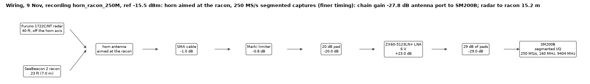

Racon raw I/Q: the whole 250 MS/s horn recording
SeaBeacon 2 racon answering the Furuno 1722C/NT, 9 Nov 2026, horn aimed at the racon, SM200B segmented I/Q at 250 MS/s (160 MHz wide), centre 9404.0 MHz. Every recorded sample, unfiltered. I² + Q² = power in µW at the SM200B input (chain gain antenna port to SM200B in the wiring diagram below). Loading…
Zoom: drag a box (a wide flat box zooms time only, a tall thin box zooms the y axis only), or scroll the wheel (time) / Shift+wheel (y). Move: right-drag, Shift+drag, or the Pan button; ← →; click or drag the strip above the plot to jump. Keys: N/P next/previous snippet, S fit snippet, F Furuno pulse, R reply scale (y set by everything after the Furuno pulse), +/- zoom, A auto y, Backspace or double-click back, Home whole recording. Zoomed out, each pixel column shows the min-to-max range of the samples under it; zoomed in past about 1 sample per pixel it draws every sample (dots below 0.35 samples per pixel). The address bar keeps the current view, so a link reopens it.
What was recorded
The SM200B was in segmented mode: each time its video trigger (−29.9 dBm) saw a Furuno pulse it kept 83 µs (20 750 samples): 3 µs before the trigger and 80 µs after,
which holds the Furuno pulse and the racon's reply. Between snippets nothing was recorded. Snippets come about 1.67 ms apart (the Furuno pulse spacing) while the beam passes the horn,
then a gap of about 2.59 s (one antenna turn). 2671 snippets over 208 s. The default time axis puts the snippets back to back; switch to real time to see the gaps.
Snippet 1 has no valid time stamp in the file (start of the first capture), so it is placed one pulse period before snippet 2.
Reply type (long R, short R) comes from radar_test/racon/data/stats_seg_horn_racon_250M_replies.csv; a snippet with no type had no complete R.
Files: export script radar_test/racon/racon_iq_web.py; data docs/racon_iq/ (meta.json, overview.bin = min/max per 0.5 µs, chunks/cNNN.bin = int16 I,Q interleaved, 32 snippets each, scale in meta.json).
Original recording: radar_test/racon/data/seg_horn_racon_250M_*. Local copy of this page: C:\ThatFamily Dropbox\Sorin Jayaweera\allSaves\mudd\senior\clinic\claude\docs\racon_iq\index.html
(open through a local server, e.g. python -m http.server in that folder; browsers block the data files when opened straight from disk).
Back to the JACON notes (Racon tab).
Wiring
